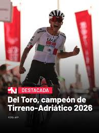
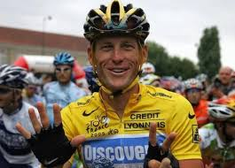
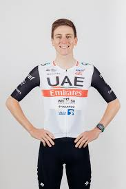
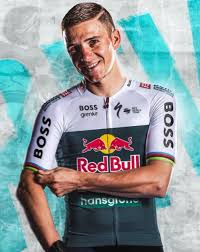
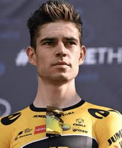
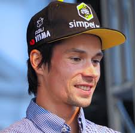

ISSAC DEL TORO
El ciclista mexicano Isaac del Toro se corona en el Tirreno-Adriático, logrando su segunda victoria en la clasificación general de una prueba por etapas del World Tour. 🏆🇲🇽🚴♂️ Ademas, se llevó el triunfo número 26 en su carrera como profesional.

EDDY MERCKX
Conocido como "El Caníbal" por su insaciable hambre de victorias, Eddy Merckx es ampliamente considerado el mejor ciclista de todos los tiempos. Con cinco victorias en el Tour de Francia, cinco en el Giro de Italia y un récord de 525 victorias profesionales, Merckx dominó el ciclismo en la década de 1970.

TADEJ POGACAR
Tadej Pogačar (nacido en 1998) es un ciclista esloveno del UAE Team Emirates, considerado uno de los mejores de la historia. Ganador del Tour de Francia (2020, 2021, 2024), Giro de Italia (2024) y múltiples monumentos, destaca por su polivalencia en alta montaña, contrarreloj y clásicas, liderando el ranking UCI con un estilo agresivo.

JONAS VINGEGAARD
Jonas Vingegaard (nacido en 1996) es un ciclista profesional danés del Team Visma | Lease a Bike, consolidado como uno de los mejores escaladores y vueltómanos del mundo. Bicampeón del Tour de Francia (2022, 2023) y ganador de la Vuelta a España 2025, es conocido por su increíble rendimiento en alta montaña.

REMCO EVENEPOEL
Remco Evenepoel (n. 2000) es un destacado ciclista belga, conocido por su precocidad y talento. Campeón del Mundo de contrarreloj 2023, 2024 y 2025, ganador de la Vuelta a España 2022 y doble oro olímpico (ruta y crono) en París 2024, compite para el Red Bull-BORA-hansgrohe desde 2026.

MATHIEU VAN DER POEL
Mathieu van der Poel (nacido el 19 de enero de 1995) es un ciclista profesional neerlandés, reconocido como uno de los más versátiles y dominantes de la actualidad. Brillando en carretera, ciclocrós (7 veces campeón mundial élite) y mountain bike, es figura clave del equipo Alpecin–Deceuninck y ganador de monumentos como el Tour de Flandes y París-Roubaix.

WOUT VAN AERT
(nacido el 15 de septiembre de 1994, 31 años) es un destacado ciclista profesional belga del equipo Team Visma | Lease a Bike, reconocido por su increíble polivalencia en ruta (esprints, clásicas, contrarreloj) y ciclocrós. Es tres veces campeón mundial de ciclocrós élite y ganador de múltiples etapas en el Tour de Francia (con maillot verde en 2022).
